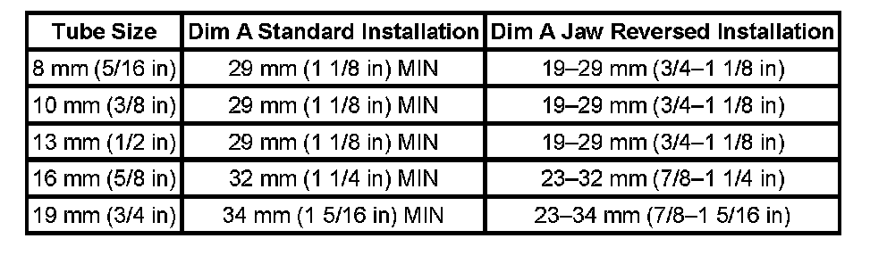

Procedures
AUXILIARY HEATER AND AIR CONDITIONING PIPE REPAIR
TOOLS REQUIRED
J 41425 A/C Line Repair Kit
The rear A/C or heater lines can be repaired in sections.
Replacement lines through GMSPO contains all 4 lines in two sections.
Use the J 41425 when any of the following actions damage the rear A/C or heater lines:
- Rub-through
- Collision damage
- Leakage in the system
MINIMUM TUBE LENGTH REQUIRED TABLE
IMPORTANT: When you section the rear A/C or heater lines, ensure that the correct minimum length remains in the straight part of the line on both sides of the splice.
Follow the Straight Line Repair procedure in order to repair line damage in a straight section of line.

Follow the Line Sectioning Repair procedure in order to repair any damage in a bend area. Do not repair the rear A/C or heater lines in a bend area, replace the lines. Maintaining the original line shape will prevent vibrations and rub-through.
STRAIGHT LINE REPAIR
1. Recover the refrigerant, if repairing the A/C lines. Refer to Refrigerant Recovery and Recharging. Refrigerant Recovery and Recharging
2. Drain the coolant, if repairing the heater lines. Refer to Draining and Filling Cooling System (Vac-N-Fill).
3. Raise and support the vehicle. Refer to Vehicle Lifting.
4. Locate the area that requires repair.
5. Obtain a length of replacement line to make the repair.
6. Use a tubing cutter in order to cut and remove the section of damaged line.
7. IMPORTANT: The length of the replacement line must be the same as the section being replaced.
Use a tubing cutter in order to cut the replacement line to length.
8. Use the cleaning pad from the J 41425 in order to clean any burrs or grease from the line ends. Be sure to clean at least 19 mm (0.75 in) from the line ends.
9. Use the LOK prep sealant in order to prep the line ends.
10. Apply one drop of the J 41425-3 sealing compound to the outside of each end of the line.
11. Insert the line ends into the LOK fitting.
12. Rotate the LOK fitting one complete turn in order to evenly distribute the sealing compound around the lines.
13. Install the correct LOK fitting jaws into the J 41425-1 tool.
14. Install the J 41425-1 tool over the LOK connectors.Verify that the LOK connector ends are positioned in the counter bores of the jaws.
15. IMPORTANT: Hold the J 41425-1 tool body with a 3/8" breaker bar.
Tighten the forcing screw of the J 41425-1 tool.When fully seated, the LOK connector collars will bottom out on the center shoulder of the LOK fitting.
16. Loosen the forcing screw and remove the J 41425-1 tool from the repaired line.
17. Repeat Step 8 through Step 16 to repair the other end of the line.
18. Verify that the LOK fittings are correctly installed.
19. Lower the vehicle.
20. Refill the coolant, if drained. Refer to Draining and Filling Cooling System (Vac-N-Fill).
21. Evacuate and recharge the refrigerant, if repairing the A/C lines. Refer to Refrigerant Recovery and Recharging. Refrigerant Recovery and Recharging
LINE SECTIONING REPAIR
1. Recover the refrigerant, if repairing the A/C lines. Refer to Refrigerant Recovery and Recharging. Refrigerant Recovery and Recharging
2. Drain the coolant, if repairing the heater lines. Refer to Draining and Filling Cooling System (Vac-N-Fill).
3. Raise and support the vehicle. Refer to Vehicle Lifting.
4. Obtain a new A/C or heater line for sectioning.
5. IMPORTANT: Stagger the splices if repairing more than one line.
Scribe a mark on the line that will be sectioned.
6. Use a tubing cutter in order to cut the line or lines being replaced.
7. Remove the section of line being replaced from the vehicle.
8. IMPORTANT: The length of the replacement line must be the same as the line being replaced.
Install the replacement line to the vehicle.
9. Use a tubing cutter in order to cut the replacement line to length.
10. Use the cleaning pad from the J 41425 in order to clean any burrs or grease. Be sure to clean at least 19 mm (0.75 in) from the A/C line.
11. Use the LOK prep sealant in order to prep the A/C or heater line.
12. Apply one drop of the J 41425-3 sealing compound to the outside of each line end.
13. Insert the line ends into the LOK fitting.
14. Rotate the LOK fitting one complete turn in order to evenly distribute the sealing compound around the lines.
15. Install the correct LOK fitting jaws into the J 41425-1 tool.
16. Install the J 41425-1 tool over the LOK connectors.Verify that the LOK connector ends are positioned in the counter bores of the jaws.
17. Hold the tool body with a 3/8" breaker bar. Turn the forcing screw until both of the connector collars bottom on the center shoulder of the LOK fitting.
18. Loosen the forcing screw. Remove the tool from the repaired line.
19. Verify that the LOK fitting is correctly installed.
20. Lower the vehicle.
21. Refill the coolant, if drained. Refer to Draining and Filling Cooling System (Vac-N-Fill).
22. Evacuate and recharge the refrigerant, if repairing the A/C lines. Refer to Refrigerant Recovery and Recharging. Refrigerant Recovery and Recharging